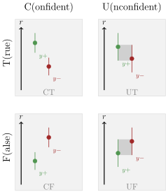
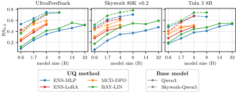

Abstract
Reward models are central to aligning large language models (LLMs) with human preferences. Yet most approaches rely on pointwise reward estimates that overlook the epistemic uncertainty in reward models arising from limited human feedback. Recent work suggests that quantifying this uncertainty can reduce the costs of human annotation via uncertainty-guided active learning and mitigate reward overoptimization in LLM post-training. However, uncertainty-aware reward models have so far been adopted without thorough comparison, leaving them poorly understood. This work introduces a unified framework, RewardUQ, to systematically evaluate uncertainty quantification for reward models. We compare common methods along standard metrics measuring accuracy and calibration, and we propose a new ranking strategy incorporating both dimensions for a simplified comparison. Our experimental results suggest that model size and initialization have the most meaningful impact on performance, and most prior work could have benefited from alternative design choices. To foster the development and evaluation of new methods and aid deployment in downstream applications, we release our open-source framework as a Python package. Our code is available at GitHub.
Introduction
Reinforcement learning from human feedback (RLHF) is a key component for aligning LLMs with human preferences. The standard RLHF pipeline trains a reward model on pairwise comparison data, then uses that model to guide policy optimization via algorithms like PPO or GRPO. However, reward models trained on limited, noisy datasets are imperfect, and overoptimizing against them can cause reward hacking, where the LLM exploits flaws in the reward signal rather than learning human preferences.
Uncertainty quantification (UQ) for reward models has emerged as a promising mitigation. By explicitly modeling epistemic uncertainty arising from finite training data, uncertainty-aware reward models enable: (1) penalizing or filtering unreliable reward signals during alignment, and (2) guiding active data collection toward the most informative preference samples improving sample efficiency.
However, most studies adopt a single UQ method without systematic comparison, leaving design choices largely unexplored. RewardUQ fills this gap with a unified framework, standardized metrics, and an open-source Python package.
Uncertainty-Aware Reward Model Architectures
For a prompt-completion pair \( (x, y) \), all architectures predict a pointwise reward \( r_{\theta}(x, y) \) and an uncertainty estimate \( u_{\theta}(x, y) \), combined into symmetric confidence bounds:
We compare four architectures, illustrated in Figure 1 below.

MLP Head Ensemble
K independent MLP heads on top of a frozen LLM backbone. Regularization keeps each head close to its random initialization and centers rewards around zero.
LoRA Adapter Ensemble
K low-rank adapters applied to the LLM backbone, each producing rewards through a linear head.
MC Dropout (DPO)
Monte Carlo dropout applied before the language modeling head of a DPO fine-tuned policy. Uncertainty is estimated from repeated stochastic forward passes and the resulting implicit rewards.
Bayesian Linear Head
Single linear reward head on LLM embeddings with a Gaussian prior. A Laplace approximation provides a posterior over parameters, enabling analytic uncertainty estimates.
Evaluation Metrics
RewardUQ evaluates uncertainty-aware reward models along accuracy (do the predictions and their confidence bounds reflect true preferences?) and calibration (do predicted probabilities match empirical frequencies?). We evaluate both of these evaluation dimensions for the reward point estimates, as well as the uncertainty bounds.
Accuracy Metrics. The win rate measures how often the reward model assigns a higher reward to the preferred completion. Beyond pointwise accuracy, we categorize predictions by whether the confidence intervals of the preferred and non-preferred completions overlap. A prediction is confident when the intervals do not overlap, and unconfident otherwise. Combined with correctness, this yields four categories: confident true (CT), confident false (CF), unconfident true (UT), and unconfident false (UF).

A good uncertainty-aware model maximizes the confident true (CT) rate while minimizing the confident false (CF) rate, as it should be confident when correct and uncertain when wrong. To reduce these metrics to a single comparable score, we propose a ranking score that rewards confident correct predictions and penalizes confident incorrect ones:
The trade-off parameter \(\alpha \in [0, 1]\) balances focus between confidence (\(\alpha = 0\)) and accuracy (\(\alpha = 1\)). For evaluations, we use \(\text{RS}_{0.2}\) as a balanced choice.
Calibration Metrics. We do not only want accurate and confident predictions, but the rewards and bounds should also be well-calibrated. The Expected Calibration Error (ECE) measures the gap between predicted preference probabilities and true empirical probabilities, computed via binning. The Expected Bound Calibration Error (EBCE) extends calibration to confidence bounds and penalizes lower bounds that overestimate or upper bounds that underestimate the true preference probability.
Experimental Results
We train and evaluate each architecture across three preference datasets and two model families: the general-purpose Qwen 3 series and the task-aligned Skywork-Reward-V2 Qwen 3 series. Hyperparameters are selected on UltraFeedback's validation split, with calibration thresholds (ECE < 0.05, EBCE < 0.01) applied first, followed by ranking by RS0.2. Final results are reported on RewardBench.

Base model initialization matters most. Methods that rely on a frozen LLM backbone for embeddings (BAY-LIN, ENS-MLP) benefit the most from task-aligned initializations like the Skywork reward model family.
No single method dominates. Performance is dependent on model size, dataset, and pre-training.
Calibration is generally well-behaved. All UQ methods maintain ECE below 0.10 and EBCE below 0.04 across configurations.
BibTeX
@article{yang2025rewarduq,
title = {RewardUQ: A Unified Framework for Uncertainty-Aware Reward Models},
author = {Yang, Daniel and Stante, Samuel and Redhardt, Florian and Libon, Lena and Kassraie, Parnian and Hakimi, Ido and Pásztor, Barna and Krause, Andreas},
year = {2026},
journal = {arXiv preprint arXiv:2602.24040},
url = {https://arxiv.org/abs/2602.24040},
}